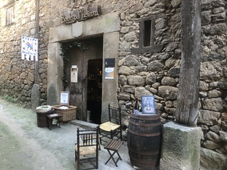

📚 GuÃa Histórica de San MartÃn del Castañar
🰠Castillo de San MartÃn del Castañar

El castillo, de origen en el siglo XIII, fue reforzado en el siglo XV por el Conde de Miranda como residencia para su hija y su esposo. Su arquitectura mezcla elementos góticos y renacentistas. Fue cementerio desde 1834 y hoy alberga el Centro de Interpretación de la Biosfera. Torre, murallas y capilla están restauradas y abiertas al público.
Curiosidad: Un rayo destruyó parte de la torre en 1834. La cicatriz aún puede verse.
🏟️ Plaza de Toros

Una de las más antiguas de España, se creó a partir del patio de armas del castillo en el siglo XVII. Conserva gradas de piedra y burladeros de granito. Las fiestas del 11 de agosto mantienen viva la tradición taurina local.
Curiosidad: La forma ovalada y su origen defensivo la hacen única entre las plazas rurales.
⛪ Iglesia de San MartÃn

Comenzada en el siglo XIII, combina gótico-mudéjar y barroco. Tiene arcos de ladrillo, retablos, un artesonado con mocárabes y pinturas murales ocultas descubiertas en el siglo XX. Es uno de los ejemplos más valiosos del mudéjar rural de Salamanca.
Curiosidad: Alberga cinco campanas y una reliquia de San MartÃn de Tours.
⛲ Fuente y Portalón

Construida en el siglo XVI, la fuente de dos caños y el portalón fueron punto de encuentro social y de abastecimiento. El agua viene de manantiales naturales. La fuente tiene inscripciones y motivos geométricos grabados.
Curiosidad: Hay quien dice que si bebes del caño izquierdo, vuelves al pueblo al año siguiente.
🙠Ermita del Socorro

Data del siglo XV y está dedicada a San Sebastián y la Virgen del Socorro. Su entorno natural es visitado en romerÃas. Su sencillez refleja la espiritualidad rural y la tradición oral serrana.
Curiosidad: Durante siglos, la gente subÃa con velas encendidas para pedir lluvia.
🌉 Puente Medieval

Con un solo arco de medio punto, conecta el pueblo con antiguas rutas comerciales. El rÃo Canderuelo fluye bajo él, y a su lado discurre una calzada romana parcialmente conservada.
Curiosidad: Hay marcas de cantero visibles en la piedra del arco.
🷠Bodega Medieval
De principios del siglo XVI, la bodega ha sido restaurada para ofrecer experiencias de vino y gastronomÃa local. Aquà termina el juego y comienza la verdadera experiencia: descubrir el secreto de Gonzalo.
Curiosidad: Se dice que vinos de esta región fueron servidos en la boda de los Reyes Católicos.